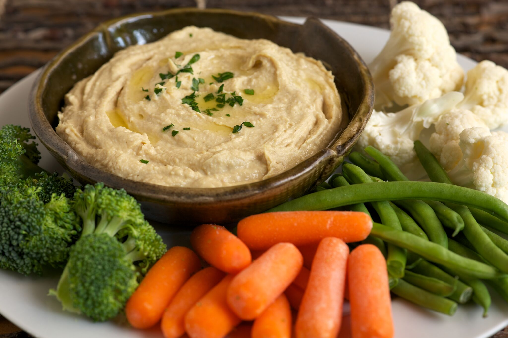

Snacks
- Baby rusks
- Cheese straws
- Cool bananas
- Finger foods
- Hummus (chickpea dip)
- Peach rice
- Pear muffins
- Raspberry and pear yoghurt
- Steamed veggies
- Tasty sweet potato wedges
- Veggie citrus muffins
Baby rusks
 Good for: finger food
Good for: finger food
Storage: in the fridge for up to 7 days, covered
Note: much cheaper and healthier than shop-bought rusks!
Ingredients
- 1 loaf unsliced wholemeal bread
Method
- Preheat oven to 120°C.
- Cut about 4cm of crust from all sides of the bread.
- Cut crusts into fingers about 2cm wide.
- Spread crusts over a baking tray and bake for about 1 hour or until they are dry and crunchy.
- Cool completely then store in airtight container.
Cheese straws
 Good for: finger food; the whole family
Good for: finger food; the whole family
Storage: freeze or keep in the fridge for up to 4 days, covered
Ingredients
- ¼ cup cheddar cheese (grated)
- ⅓ cup plain wholemeal flour
- 2 tablespoons canola or olive oil margarine
- 1 egg (beaten)
- 1 splash milk
Method
- Line a baking tray with baking paper.
- Preheat oven to 180°C.
- In a bowl, rub margarine into flour (between your fingers) until it looks like breadcrumbs.
- Mix in cheese.
- Add nearly all beaten egg (save a little bit), mixing with knife to form a dough.
- Roll into a ball with your hands (add a little milk if too dry).
- Roll out dough on floured surface until ½cm thick.
- Cut into 5cm x 1cm pieces and place on baking tray.
- Brush rest of egg (or a little milk) over top.
- Bake in oven for 10 minutes or until golden.
- Cool completely then store in airtight container.
To serve the family
Follow the same method but for a family of 4 use:
- 1 cup cheddar cheese (grated)
- ⅓ cup plain wholemeal flour
- ½ cup canola or olive oil margarine
- 4 eggs (beaten)
- milk
Cool bananas
 Good for: finger food; soothing teething gums
Good for: finger food; soothing teething gums
Storage: freezer friendly
Note: easy snack for hot days, even before any teeth come through
Ingredients
- 1 ripe banana
- 1 cup unsweetened plain natural yoghurt
- 1 cup wheat germ
Method
- Cut banana into pieces about the length of your baby's finger.
- Cover a baking tray with baking paper.
- Dip banana into yoghurt then turn in wheat germ until coated.
- Place coated banana on baking tray.
- Repeat until all pieces have been coated.
- Place in freezer for about 2 hours or until banana pieces are firm.
- Serve firm.
- Place unused cool bananas in a snaplock bag and keep in the freezer for later.
Finger foods
Good for: the whole family
Storage: in the fridge, covered, for 1-3 days depending on items selected; not suitable for freezing
Note: super easy; see video of recipe
Ingredients s (pick and choose)
- watermelon
- pineapple
- capsicum strips
- baby corn spears
- banana
- avocado
- steamed broccoli
- pita bread
- halved grapes
- steamed carrot sticks
- halved strawberries
- cooked lean chicken
- pasta spirals
- steamed snow peas
- steamed cauliflower
- meatballs
- cucumber slices
- cooked apple slices
- orange slices
Method
- Cut into strips and shapes easy for little hands (and big hands) to manage.
- Cook or leave raw depending food(s) chosen.
- Choose a dip to go with the finger food if you like (e.g. hummus with carrot sticks, pita bread or cucumber slices; cheese sauce with pasta, cauliflower or broccoli; pasta sauce with pasta, cooked chicken or meatballs; unsweetened plain yoghurt with grapes, banana or strawberries).
- Serve at room temperature.
Adapted from the Infant Program website. For more help getting healthy eating and active play with your baby right from the start, visit infantprogram.org.
Hummus (chickpea dip)

Good for: the whole family
Storage:in the fridge for up to 4 days, covered
Note: super easy, healthy and full of protein
Ingredients
- 1-2 cloves garlic (crushed)
- ½ cup tinned chickpeas (low salt ideally)
- ½ tablespoon tahini (ground sesame seeds, optional)
- 2 tablespoons lemon juice
- 2-3 tablespoons water (adjust according to consistency)
- 1 teaspoon ground cumin (optional)
- a pinch paprika (optional)
Method
- Drain and rinse chickpeas well.
- In a food processor (or a bowl to use with a stick blender) add garlic, 2 tablespoons water, lemon juice, tahini (if using) and spices (if using).
- Blend, adding a little more water if sticking, until desired consistency.
- Serve with Baby rusks or sticks of carrot (steamed for young babies) or other Finger foods once cooled.
- Refrigerate unused hummus in an airtight container for up to 4 days.
Peach rice
 Good for: when you are 'out' of fresh fruit
Good for: when you are 'out' of fresh fruit
Storage: in fridge for up to 1 day, covered; not suitable for freezing
Note: super easy!
Ingredients
- ¼ cup tinned peaches in fruit juice (not syrup)
- 1 tablespoon cow's milk
- 4 teaspoons baby rice cereal
Method
- Drain peaches and place in a jug with milk and rice.
- Mash/purée to desired consistency.
- Serve at room temperature.
- Cover and refrigerate any unused peach rice for up to a day.
Pear muffins
 Good for: healthy, no-added sugar snack for the whole family
Good for: healthy, no-added sugar snack for the whole family
Storage: freeze or keep in the fridge for up to 4 days, covered
Note: bananas can be used instead of pears; makes 4-6 muffins (depending on size of tray)
Ingredients
- ½ cup self-raising wholemeal flour (or plain wholemeal flour with ¾ teaspoon baking powder added)
- 1 egg
- 2 overripe pears (or bananas)
- ¼ cup canola oil
- 1 pinch cinnamon
- 1 tablespoon milk
Method
- Preheat oven to 180°C.
- Line muffin tray with muffin papers (or spray with oil).
- Peel and core pears/bananas. oil).
- Chop one pear/banana finely and mash the other, set aside.
- In a bowl, whisk together oil and egg thoroughly, set aside.
- In a large bowl, add cinnamon to flour and stir in chopped pear/banana.
- Gently mix the mashed pear/banana and oil mixture with the flour.
- Mix in milk until just combined.
- Spoon mixture evenly into muffin tray.
- Bake for about 20 minutes, until firm to touch and golden or until a wooden toothpick inserted in centre comes out clean.
- Freeze or refrigerate in airtight container for up to 4 days.
Raspberry and pear yoghurt
 Good for: young babies who love the natural fruit sugars and colours in this dish!
Good for: young babies who love the natural fruit sugars and colours in this dish!
Storage: in the fridge for up to 2 days, covered; not suitable for freezing
Ingredients
- ½ cup raspberries (fresh or frozen)
- ½ cup overripe pear (mashed)
- 1 cup unsweetened plain natural yoghurt
Method
- Place raspberries and pear in a small pot and cover with water.
- Bring to the boil, then reduce heat and simmer for a few minutes.
- Press raspberry/pear mix through a sieve to remove seeds (throw these away).
- Swirl raspberry/pear purée through yoghurt and serve.
- Any unused raspberry and pear yoghurt can be covered and refrigerated for up to 2 days.
Steamed veggies
 Good for: finger food (if left whole)
Good for: finger food (if left whole)
Storage: freeze or keep in the fridge for up to 1-2 days, covered
Note: steamed vegetables make perfect snacks whether puréed (complete step 4) or as finger-sized healthy snack foods (for young and old alike!)
Ingredients
- handful of green beans (trimmed)
- 2 carrots (washed and cut in 2cm x 3-4cm pieces) OR
- 2 handfuls 2cm x 2cm broccoli florets (pieces)
Method
- Place vegetables in a steamer or metal colander over a pot of boiling water and cover.
- Steam vegetables for 7-8 minutes (add broccoli after 2-3 minutes) or until tender.
- Drain, cool and store for pieces.
OR
Mash/purée to required consistency (use a little water ifrequired) before serving. - Freeze extra in ice/cupcake trays or cover and refrigerate for up to 1-2 days.
Tasty sweet potato wedges
 Good for: finger food; first food; the whole family
Good for: finger food; first food; the whole family
Storage: in the fridge for up to 3 days, covered
Note: perfect snack for your baby when eaten cold
Ingredients
- 4 medium sweet potatoes (washed, peeled, cut into wedges and soaked in water for 20 minutes)
- 2 tablespoons canola or olive oil
- 1 teaspoon dried mixed herbs
- 1 teaspoon mild ground paprika
Method
- Preheat oven to 180°C.
- Cover a baking tray with baking paper.
- In a large bowl, mix oil, herbs and paprika.
- Add sweet potatoes and toss to coat in the mixture.
- Arrange wedges in 1 layer on baking tray then bake for 40-50 minutes or until tender and golden.
- Cool then serve cold to your baby.
To serve the family
This recipe is designed for a whole family (depending on the size of the potatoes!) - follow the same method but serve hot after step 5.
Veggie citrus muffins
 Good for: highly nutritious snack for the whole family; great way to use up vegetables
Good for: highly nutritious snack for the whole family; great way to use up vegetables
Storage: in the fridge for up to 4 days, covered
Note: finely grated carrot can be used instead of zucchini; makes 8-10 muffins or 36 mini-muffins
Ingredients
- 1 cup self-raising wholemeal flour (or plain wholemeal flour with 2 teaspoons baking powder added)
- 1 cup oat bran
- 1 teaspoon baking powder
- 1 teaspoon ground cinnamon (optional)
- 2 eggs
- ⅓ cup canola oil
- ½ cup brown sugar
- zest of 1 orange or lemon
- ⅓ cup orange juice
- 2 cups zucchini - about 1 large (skin on, shredded)
Method
- Preheat oven to 180°C.
- Line muffin tray with muffin papers (or spray with oil).
- In a large bowl, combine all dry ingredients, set aside.
- In another bowl, whisk together eggs and other ingredients thoroughly.
- Add egg mixture to flour mixture and stir until just combined.
- Spoon mixture evenly into muffin tray (fill about ⅔ full).
- Bake for 10-12 minutes for mini size (15-17 minutes for large size) or until a wooden toothpick inserted in the centre comes out clean.
- Cool in tin for 10 minutes on rack.
- Remove from tins and cool completely on wire rack.
- Freeze or refrigerate in airtight container for up to 4 days.